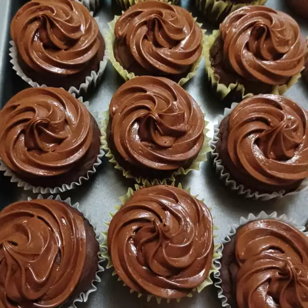

Chocolate Cupcakes

Chocolate cupcakes are the ultimate party food. These are super moist and bursting with chocolaty flavor and they're so easy to make. Frost these delicious chocolate cupcakes with buttercream or cream cheese frosting, or try royal icing or even whipped cream.
- Cocoa Powder
- Flour
- One and ½ cups Sugar
- Butter
- Vanilla
- Eggs
- Milk
- Leavening Agents
- Salt
- Preheat the oven to 350 degrees F (175 degrees C). Line a muffin pan with paper or foil liners.
- Sift together flour, cocoa, baking powder, baking soda, and salt.
- Cream together sugar and butter in a large bowl until light and fluffy. Add eggs, one at a time, beating well after each addition. Stir in the vanilla. Add flour mixture in two batches, alternating with milk; beat well. Spoon batter into the prepared muffin cups, filling each 3/4 full.
- Bake in the preheated oven until a toothpick inserted into the centers comes out clean, 15 to 17 minutes. Remove from the oven and let cool before serving or frosting.
Return To Main Page